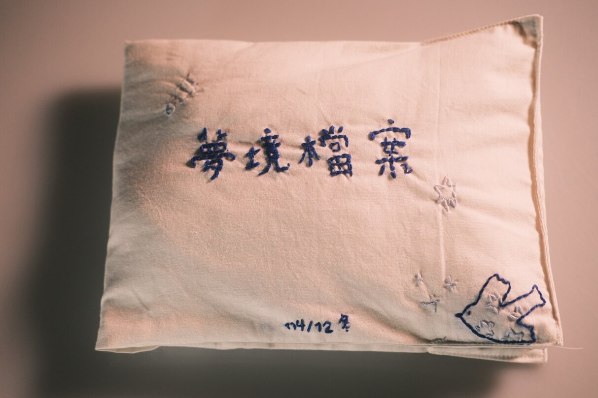
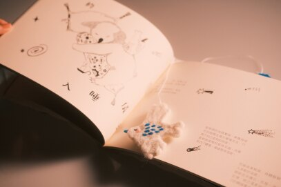
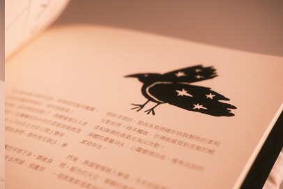
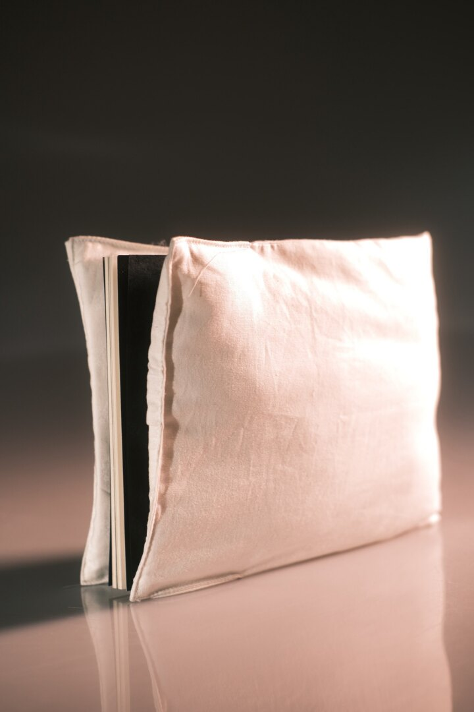
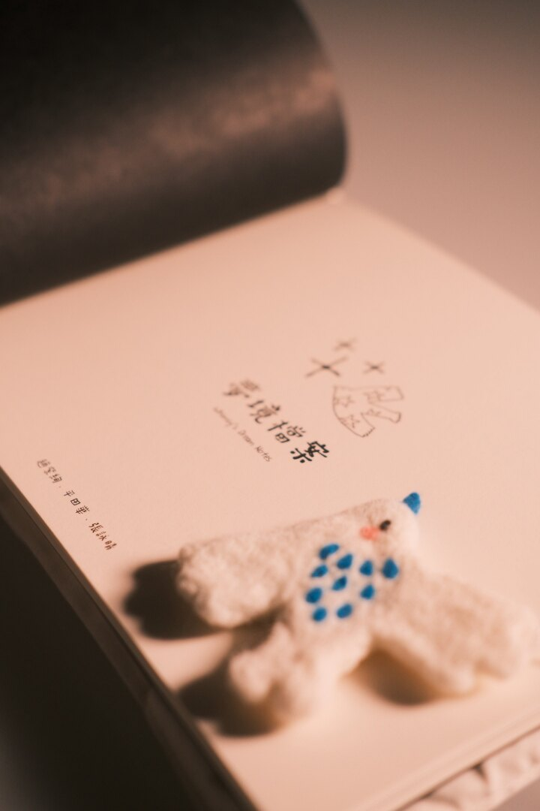
[ 紙材使用 ]
鬆厚紙 230g
德國再生環保隕紋紙 310g
C25021-黑
題材選定__睡眠
每個人都有屬於自己的入睡儀式。有人喝熱水、有人聽音樂。這本書記錄人們在清醒與夢境之間的微小習慣與情緒。
也透過蒐集關於睡眠的瑣事，在沉澱過後的字詞中，融入充滿溫度的手繪插畫，揉合並且表達所有關於睡眠的一切。





鬆厚紙 230g
德國再生環保隕紋紙 310g
C25021-黑
每個人都有屬於自己的入睡儀式。有人喝熱水、有人聽音樂。這本書記錄人們在清醒與夢境之間的微小習慣與情緒。
也透過蒐集關於睡眠的瑣事，在沉澱過後的字詞中，融入充滿溫度的手繪插畫，揉合並且表達所有關於睡眠的一切。
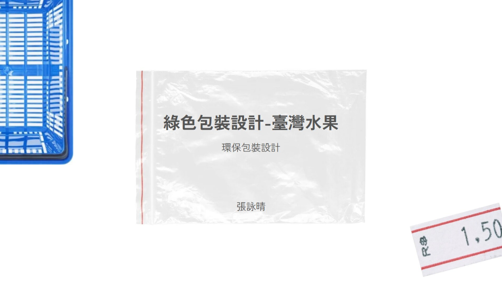
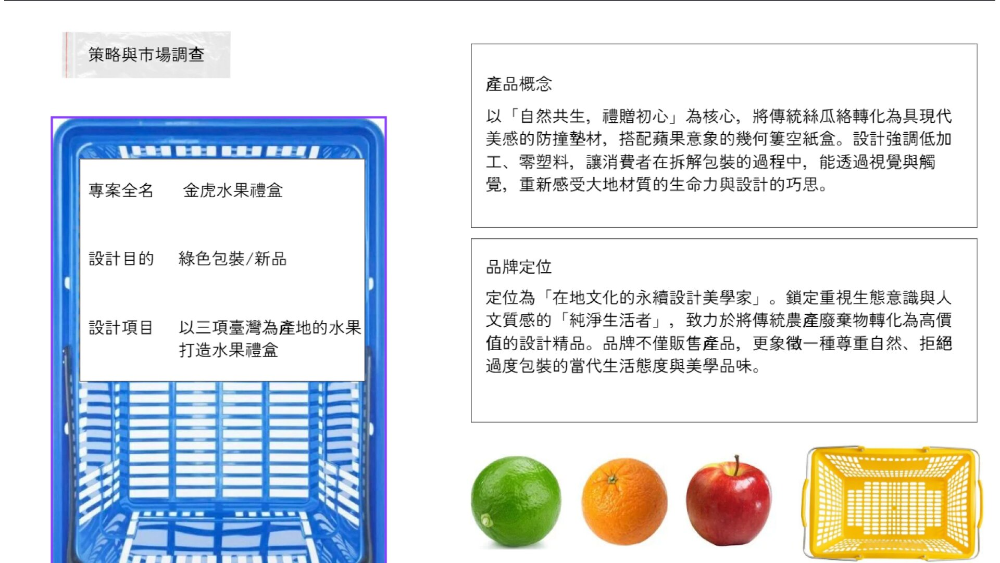
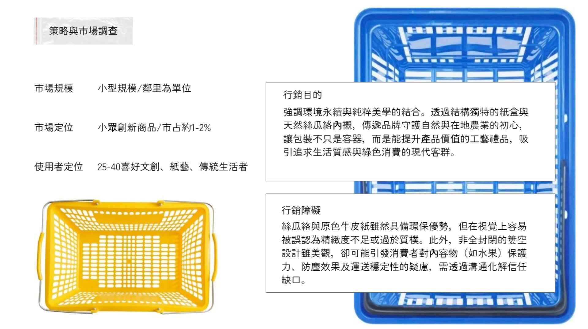
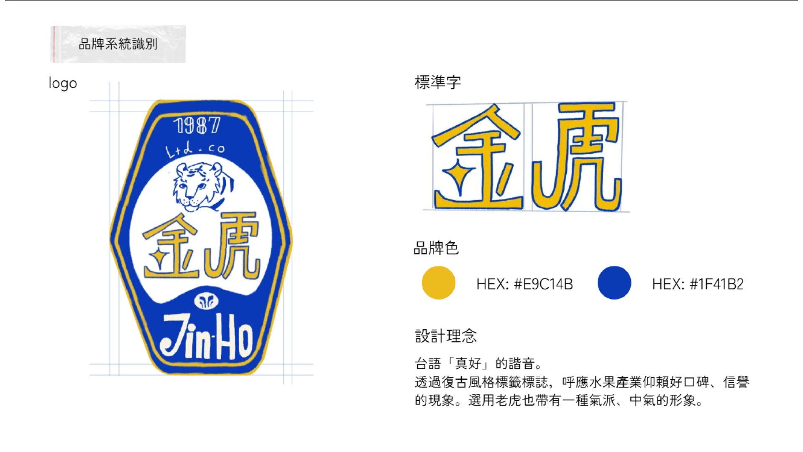
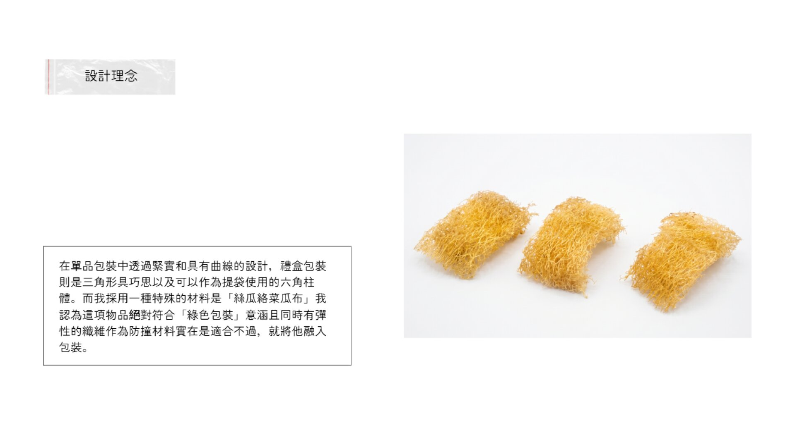
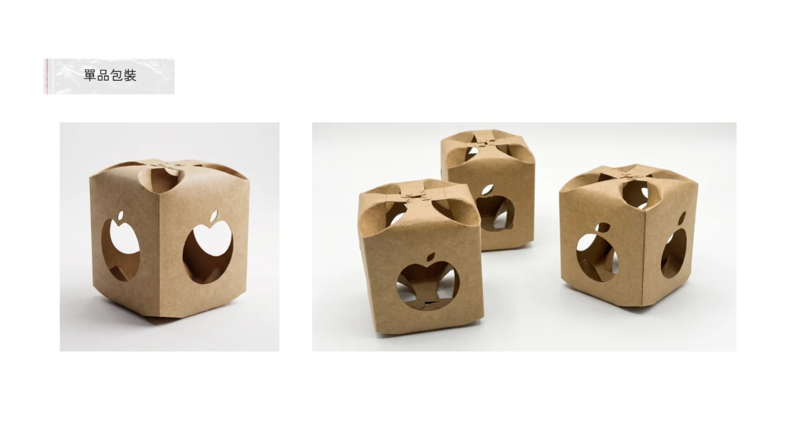
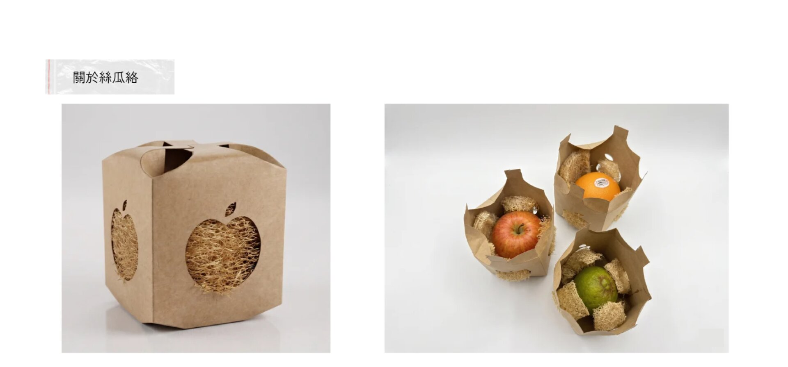
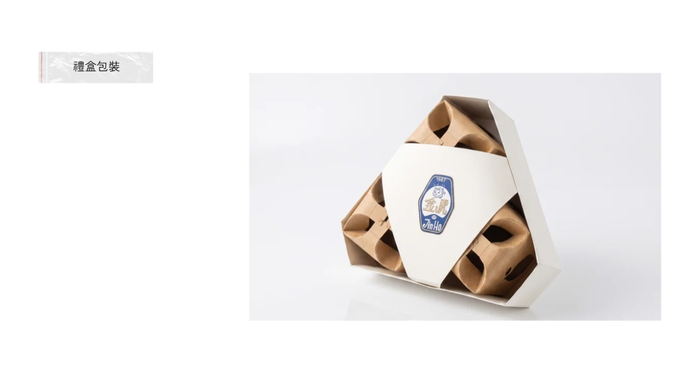
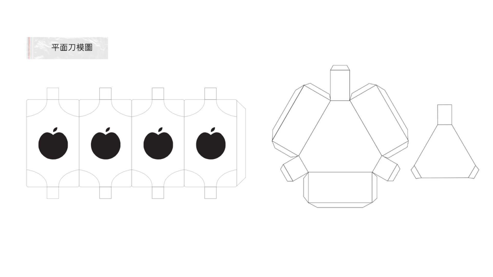
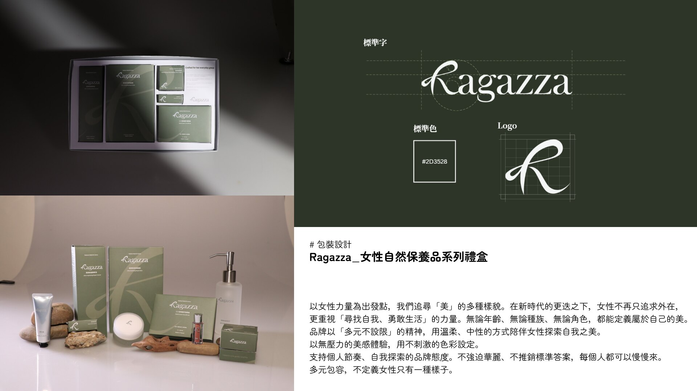